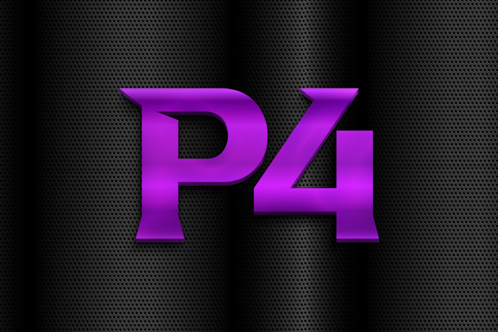

História do p4:

O grupo tem como sua base quatro participantes, sendo eles:
Cleber Neves; Arthur Neves; Louize Carolina; Alberto Leone.E tem como tema base de suas composições o estilo musical Love Song, um ramo româtico do hiphop. Inicialmente se identificou com o estilo musical de sertanejo, hoje com o estilo atual já conta com lançamento de uma faixa no youtube: Parcelado p4 .
E tem conta criada na rede social instagram: p4 account 
O p4 promete ser tendência pela qualidade nas composições. Com o tempo que tem de criado, o grupo, já conta com grandes faixas, algumas ainda não publicadas, mas com certeza de explendor!